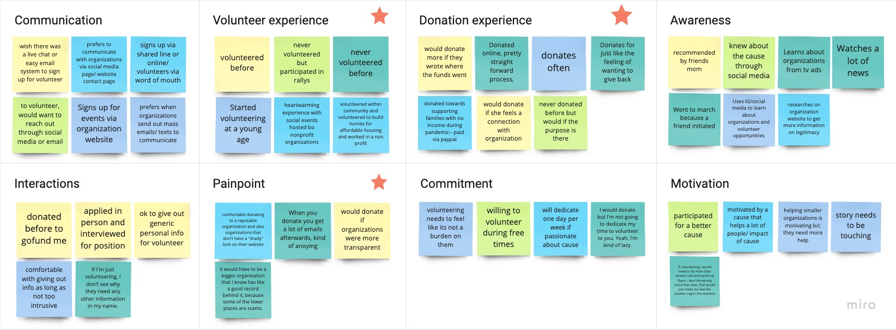
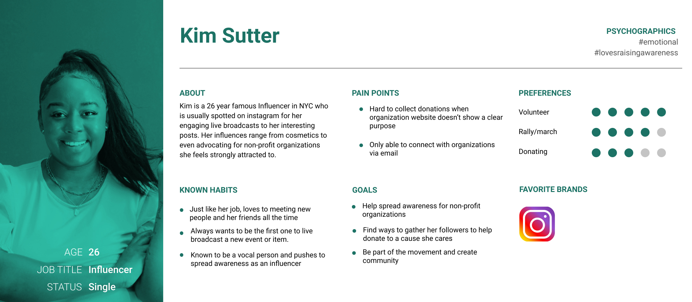
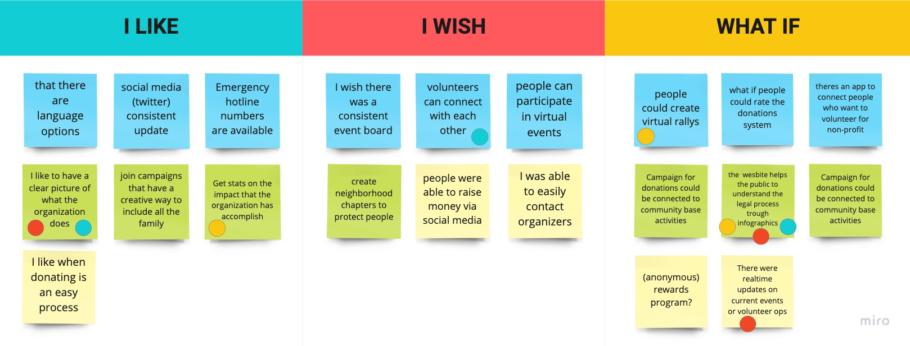
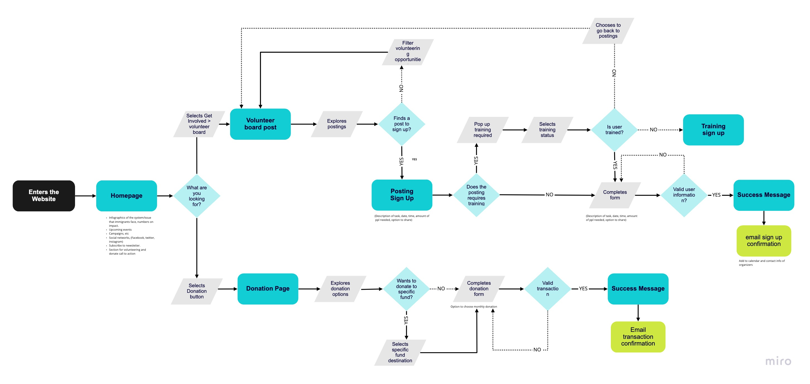

NPO Website Redesign
New Sanctuary Coalition
New Sanctuary Coalition fights deportation while increasing the visibility of immigration detention. The goal of the projects is to redesign the website by improving the organization of the content and the hierarchy of each page, providing the necesary information for people to get involved in the cause by volunteering, donating and sharing information.

ROLE
Ux Researcher, UX designers, UI Designer.
TOOLS
Miro, Figma, Adobe XD, Otter, Excel, Photoshop, Google Slides, Pen and paper.
TIMELINE & SCOPE
3 week long sprints to design the home page, Volunteer Sign Up and Donations flow

Emphathise
To better understand the problem, the team designed a research plan that included implementing a Survey and Interviewing Users with the goal of identifying how people get involved with social justice issues, at what capacity, their motivations, needs and painpoint. This was complemented with an Heuristic Evaluation to asses the current website

The website should be a reflection of that organization, it should look professional, reassuring.
Interviews & Survey Findings
After interviewing 6 people and with the data collected on the Survey, we learned that users need to feel the organization is trustworthy indicating transparency of fundings, donnors and their work structure as main factors to decide to invest time or money in the cause.
Heuristic Evaluation
The information on the site is very complete, but the design presents different usability problems that affects the user experience.
Some of the main pain points are:
- Color scheme
- Hierarchy
- Use of the white space

Define
With the information collected during the previus phase we were able to gain better undesrtanding the problem space by developing an Affinity Diagram, creating a User Persona and a Problem statement.
Affinity Diagram
From the data colected during interviews and trough our survey, I was able to narrow down our direction to focusing on evolving/updating volunteer opportunities and donation preferences
User Persona
One of the main facts we learned on the researdh is that most users learn about non-profits and demostrations trough social media. This lead to the User Persona: Kim an Influencer looking to get involved on Immigration Justice.
Problem Statement
Kim has some free time and would like to use it fighting social justice issues, but feels overwhelmed because it’s hard to find a trustworthy organization.
How might we create a more organized, appealing and digestible website in order for visitors to be able to feel engaged and to find opportunities to help with this social justice cause?

Ideate
With the problem and the goals defined, I was able lay out the features that the sign up for volunteer oportunities and donations page will have. Focusing on giving more transparency and control to the user.
I like, I wish, What if
The main focus of the design contemplates: A donations flow that shows how the organization is using the money and giving users the option to directly donate to a designated budget. Featuring a volunteer board that show concrete oportunities that you can filter by skill, time, location, etc. To sign up for.
User Flows


Prototype
During this phace, the team moved trough three iterations: sketches, Lo-Fidelity and High Fidelity mockups. Performing a round of user testing between Lo and High fidelity iteration.
Lo-Fidelity Wireframes
The first iteration contemplated the structre for the homepage, a volunteer board with filters displayed on top of the posting grid and a donation page with an extensive form.


Style Guide
The creation of a homepage layout is structire in a way that can easly communicate what the organization does and who they are, with the goal if building trust


Hi-Fidelity Prototype
The creation of a homepage layout is structire in a way that can easly communicate what the organization does and who they are, with the goal if building trust


Test
Through our user testing plan and notes, we were able to pull insightful points for all three flows.
Homepage
- Flow of the homepage could be more consistent and graphic
- Navigation is missing
- Need more content on what, where, who based on the organization
- Activities section in the homepage is hard to recognize as it’s missing the titles and hard to navigate
Volunteer Flow
- Flow of the homepage could be more consistent and graphic
- Navigation is missing
- Need more content on what, where, who based on the organization
- Activities section in the homepage is hard to recognize as it’s missing the titles and hard to navigate
Donation Flow
- Flow of the homepage could be more consistent and graphic
- Navigation is missing
- Need more content on what, where, who based on the organization
- Activities section in the homepage is hard to recognize as it’s missing the titles and hard to navigate